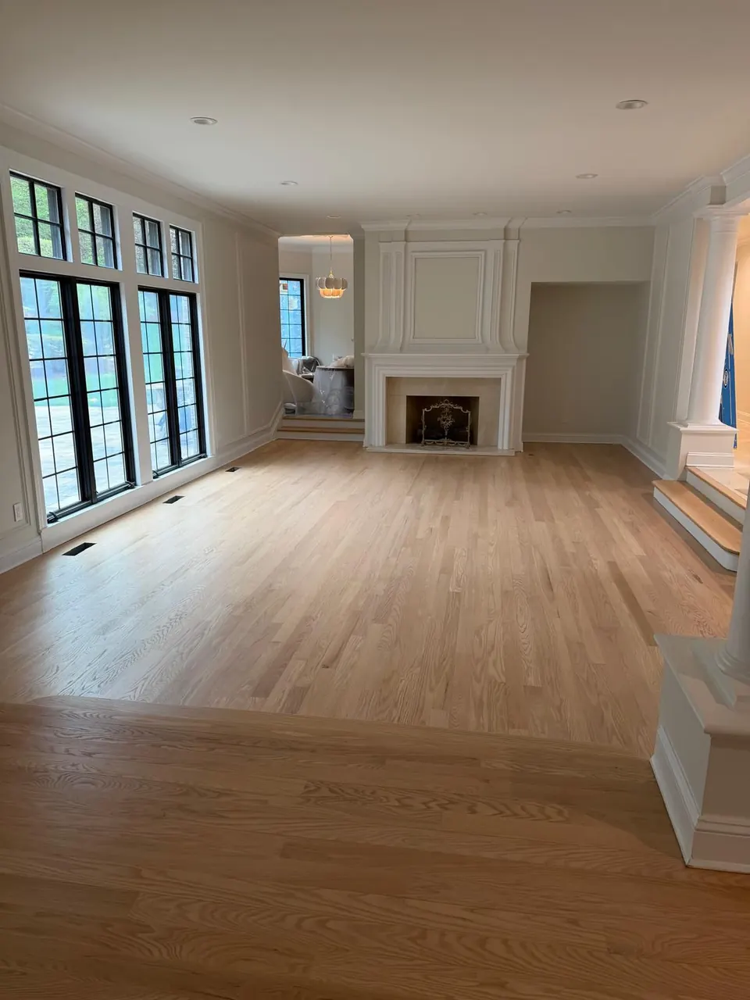
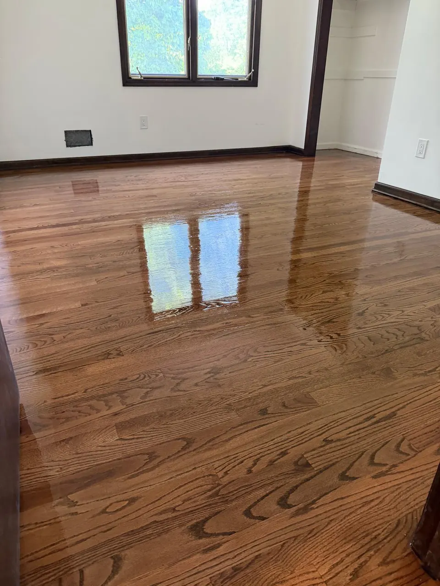
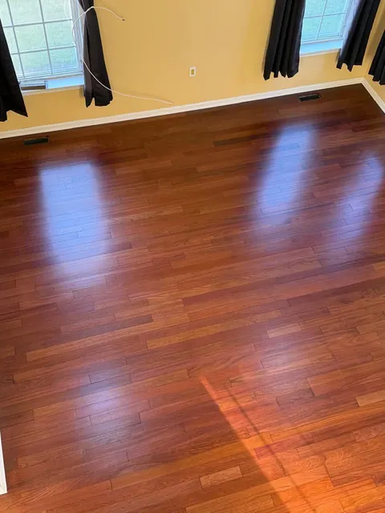
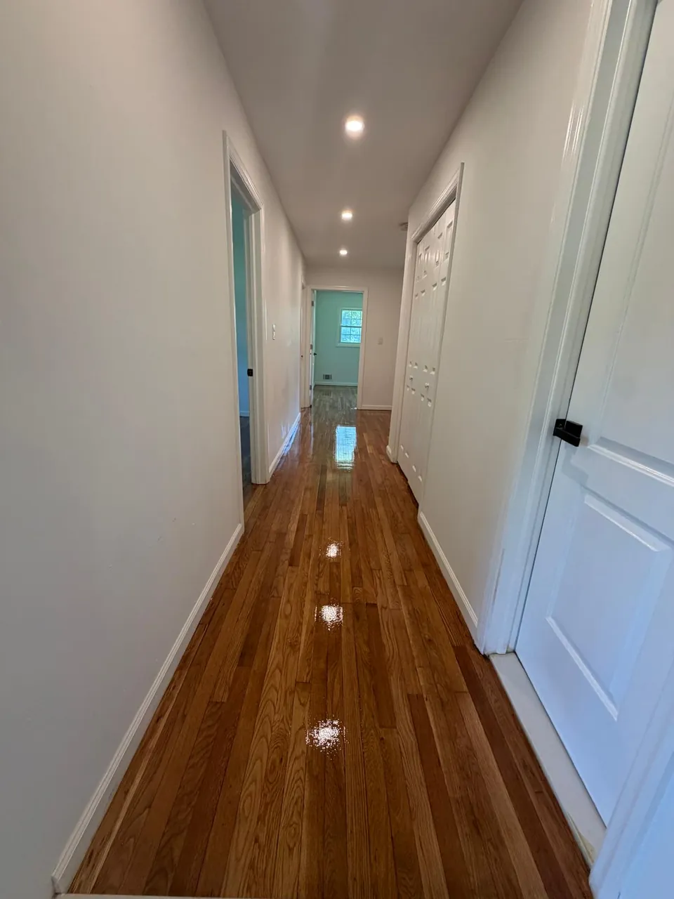
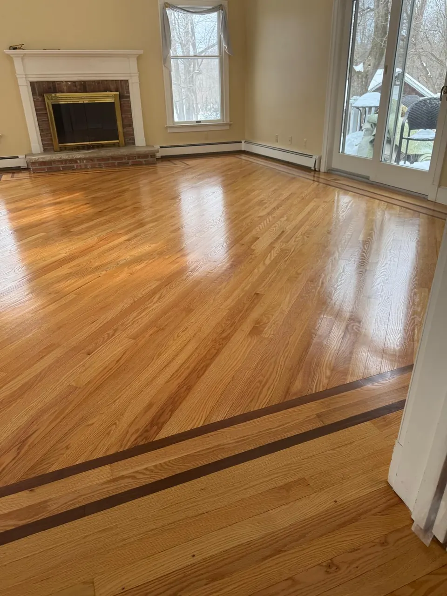

How Hardwood Floor Refinishing Restores Old Floors
Scratches, fading, stains and dull finishes can make floors look old and neglected. In many cases you don't need to replace them: refinishing brings them back to life.

Scratched, gray or orange floors in Linden and across North Jersey: the old finish and the worn top layer come off, and the scratches, wear paths and 1990s tint go with them. Most homes take 2 to 5 days.

If you have solid oak, maple or pine, it can almost always be refinished instead of replaced. Every refinishing job includes:
We check the thickness at a floor vent or threshold during the estimate, and tell you plainly which option makes sense.
Enough wood on top to be sanded several times. If there's thickness left, refinishing is the better deal by a wide margin.
A thick wear layer can often be refinished once. Thin-veneer engineered floors and laminate can't be sanded.
If the floor has been sanded too many times or has serious damage, we'll say so and quote a repair or a new installation instead.
You get a written price and a written schedule before the sander comes in.
The loudest, dustiest day, kept in check with containment equipment. Repairs and gap filling happen here.
Stain samples on your floor, then stain if you chose a color. Natural floors skip straight to finish.
Two or three coats with drying time between each. You can walk in socks after the last coat dries.
We walk the floor with you before we call it done, then clean up. Furniture goes back in a few days, rugs in about two weeks.
You can usually stay in the house. Upstairs bedrooms are fine while we work on the main floor; if the whole house is being done at once, we'll plan the order with you.
Dries fast and stays clear, so light and white-washed floors keep their color instead of going amber.
The classic warm amber look on oak. Longer drying time between coats.
Matte, satin, semi-gloss or gloss. Satin hides small scratches best and is what we recommend for most homes.
My floors look beautiful! Costa was very detailed in helping me find the right color and gloss. Everything came out even better than I had hoped.
Renato arrived even earlier than scheduled. He did a fantastic job sanding, staining, and refinishing multiple rooms and stairs. Great to work with!
Excellent renovation of our home flooring. The team was friendly, responsive, and highly organized. Impeccable, clean work throughout.
Surface stains, yes. Deep black urine stains that have soaked into the wood usually need the boards replaced, which we can do as part of the job.
If you want the same look, we stain to match. If you want a change, this is the moment to do it. See floor staining.
Yes. One room, a hallway, a whole floor or the whole house.
Usually yes. Upstairs bedrooms are fine while we work on the main floor. If the whole house is being done at once, we plan the order with you.
Engineered hardwood with a thick wear layer can often be refinished once. Thin-veneer engineered floors and laminate cannot; we'll tell you at the estimate.
Bedrooms, living rooms and hallways, natural and stained. Click any photo to see it larger.

Drum, edge and buffer sanding with dust containment. The step everything else depends on.
Sanding details
Natural, brown, gray or dark. Samples tested on your sanded floor so you choose from the real thing.
Staining details
Treads and risers sanded, stained to match the floor and finished, or new oak treads over old steps.
Stair details
Scratches, fading, stains and dull finishes can make floors look old and neglected. In many cases you don't need to replace them: refinishing brings them back to life.

Homeowners across Union County put off refinishing because they dread the cleanup. Here's what "dustless" really means, how containment works and what it protects in your house.

Sanding and finishing is only half the schedule. Drying, curing and moving furniture back take time too. Here's how to work backward from your holiday gathering.